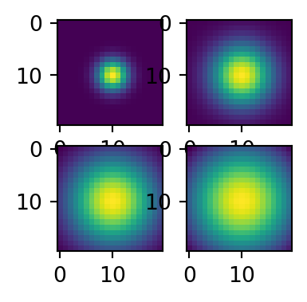
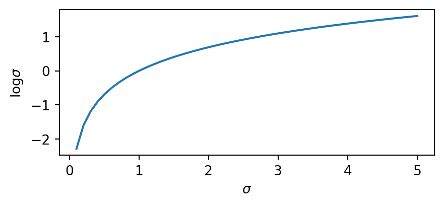

Research journey: Where are we? Where do we want to go?
Jorge Vila Tomás
Introducing functional forms in CNNs: Gabor, Gaussian & Center-Surround
Why are we doing this?
- We think it makes sense.
- Reduction in the number of parameters.
- Instead of hoping that human-behavior arises, impose it.
Chosen functional forms?
Gaussian-like filters
\[ G(x,y) = A e^{-\left( \frac{(x-x_0)^2}{2\sigma_x^2} + \frac{(y-y_0)^2}{2\sigma_y^2} \right)} \]
Not all the parameters can take all values.
By definition, \(\sigma_x\) and \(\sigma_y\) must be different from 0.
def gaussian_2d_tf(i, j, imean, jmean, sigma_i, sigma_j, sigma_theta):
sigma_vector = tf.convert_to_tensor([sigma_i, sigma_j])
cov_matrix = tf.linalg.diag(sigma_vector)**2
det_cov_matrix = tf.linalg.det(cov_matrix)
constant = tf.convert_to_tensor((1/(2*PI*tf.sqrt(det_cov_matrix))))
rotation_matrix = tf.convert_to_tensor([[tf.cos(sigma_theta), -tf.sin(sigma_theta)],
[tf.sin(sigma_theta), tf.cos(sigma_theta)]])
rotated_covariance = tf.cast(rotation_matrix @ tf.linalg.inv(cov_matrix) @ tf.transpose(rotation_matrix), tf.float32)
x_r_1 = rotated_covariance[0,0] * i + rotated_covariance[0,1] * j
y_r_1 = rotated_covariance[1,0] * i + rotated_covariance[1,1] * j
distance = i * x_r_1 + j * y_r_1
gaussian = constant * tf.exp(-distance/2)
return gaussianGabor filters
\[ G(x,y) = A e^{-\left( \frac{(x-x_0)^2}{2\sigma_x^2} + \frac{(y-y_0)^2}{2\sigma_y^2} \right)} \mathrm{cos}\left( 2\pi f \left( x\mathrm{cos}(\theta) + y\mathrm{sin}(\theta) \right) \right) \]
Not all the parameters can take all values.
By definition, \(\sigma_x\) and \(\sigma_y\) must be different from 0.
def gabor_2d_tf(i, j, imean, jmean, sigma_i, sigma_j, freq, theta,sigma_theta):
sigma_vector = tf.convert_to_tensor([sigma_i, sigma_j])
cov_matrix = tf.linalg.diag(sigma_vector)**2
det_cov_matrix = tf.linalg.det(cov_matrix)
constant = tf.convert_to_tensor((1/(2*PI*tf.sqrt(det_cov_matrix))))
rotation_matrix = tf.convert_to_tensor([[tf.cos(sigma_theta), -tf.sin(sigma_theta)],
[tf.sin(sigma_theta), tf.cos(sigma_theta)]])
rotated_covariance = tf.cast(rotation_matrix @ tf.linalg.inv(cov_matrix) @ tf.transpose(rotation_matrix), tf.float32)
x_r_1 = rotated_covariance[0,0] * i + rotated_covariance[0,1] * j
y_r_1 = rotated_covariance[1,0] * i + rotated_covariance[1,1] * j
distance = i * x_r_1 + j * y_r_1
gabor = constant * tf.exp(-distance/2) * tf.cos(2*3.14*freq*(i*tf.cos(theta)+j*tf.sin(theta)))
return gaborCenter-surround filters
Placeholder
PerceptNet
Ablation study

Validation Pearson Correlation on TID2013 for different network configurations.
Optimization problems
NaN during training
flowchart LR A[The output of the layer becomes NaN] --> B[The loss becomes NaN] B --> C[The parameters become NaN]
Solution
Optimize for \(\mathrm{log}(\sigma)\) instead of \(\sigma\).

Negative values in the GDN
\[ GDN(inputs) = \frac{inputs}{\sqrt{\mathrm{conv}(inputs^2)}} \]
- If the convolutional kernel is gaussian, it must be \(\geq 0\).
- \(inputs^2 \geq 0\).
- Thus, \(\sqrt{\mathrm{conv}(inputs^2)} \geq 0\).
- But computational problems (?) were producing \(-0\).
Style transfer with CycleGAN
Turn synthetic data into real-like data to increase the available data to train segmentation models.
What is a CycleGAN and how does it work?
CycleGAN diagram.
Examples
How are we testing our approach
- Train a CycleGAN to transform between CityScapes and GTA.
- Evaluate 1 a segmentation model (trained on CityScapes) on GTA.
- Transform the GTA images into CityScapes and evaluate the same model.
- We expect that a good transformation translates into a better result.
Our results so far
Our current method doesn’t improve the results:
- Without CycleGAN: \(IoU = 0.40\).
- With CycleGAN: \(IoU = 0.34\).
Sample results with and without applying the CycleGAN’s transformation.
What others have achieved
Hue cancellation: Debunking Jameson-Hurvich
Hue cancellation experiment
An user is shown two colored surfaces that can be controlled with a set of knobs. These knobs change the perceived color of the surfaces. The user must use the knobs to modify the surfaces until they become of equal hue.
Classic interpretation
Usually considered as the first psychophysical quantification on opponent color coding in the human brain.
Our findings
Using an Identity Network 1 we were able to obtain the same results.
What do we think this means?
The color coding is not done in the brain, and the experiment doesn’t provide any insight about the brain itself.